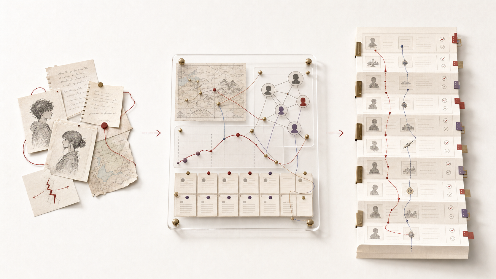

决定写什么与怎么写
- 题材、主题与人物选择
- 文风、情感和叙事节奏
- 章节定稿与发布授权
不是一次写完，而是让故事长期保持方向。
从题材和核心冲突开始，把世界、人物、情节和章节逐层固定；每一章都在既有事实中继续生长，并把新增设定写回长期档案。

先建稳定的故事骨架，再进入分章写作；正文推进时，人物和世界不会被一次对话重置。
确认类型、读者、主题和不可替代的矛盾。
得到：创作命题建立规则、时间、地点、关系与人物欲望。
得到：设定档案把冲突变化、关键转折和结局组织成因果链。
得到：总纲明确每卷任务、每章变化和必须兑现的信息。
得到：章节路线围绕场景目标、人物选择和结果完成本章。
得到：章节草稿核对人物声音、时间线、伏笔和世界规则。
得到：问题清单处理情感、节奏、文风和真正重要的取舍。
得到：章节定稿记录新增事实、进度和后续必须承接的线索。
得到：可续接状态作品和档案同步增长，下一次继续时不需要重新解释整本书。
规则、地点与时间线
关系、动机与成长变化
总纲、卷纲、伏笔与章节计划
正文版本、状态与后续承接